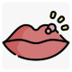

Zona
Rx
1.Tab Acyclovir 400mg N=70 2tab q5h
Or Valacyclovir 1000mg N=21 q8h
2.Tab Gabapentin 100 mg N=10 qd
3.Gel Lidocaine N=1 PRN
نکته: زونا میتونه اولین علامت یک نقص ایمنی اکتسابی باشه توصیه میشه برای بیمار CBCdiff چک بشه.
نکته: آسیکلوویر با اب زیاد خورده شود. (از عارضه هاش ازوفاژیته)
نکته: والاسیکلوویر فرم فعال آسیکلوویر است و تاثیر بهتری دارد
نکته: گاباپنتین برای نورالژی بیمار میدیم اثرات ارام بخشی و خواب اوری داره بهتر شب میل شود.
نکته: نورالژی متعاقب زونا ممکنه مدت ها باقی بماند
H.Simplex (Oral)
1.Tab Acyclovir 400mg N=9 q8h
2.Cream topical Acyclovir N=1 q8h
نکته: شروع زودتر درمان تاثیر بسزایی در بهبودی دارد
نکته: در طی دوران بیماری قابلیت سرایت بیماری از ترشحات وجود دارد
زونا
Impetigo 1️⃣
2️⃣ کاندیدیازیس
3️⃣ درماتیت تماسی
4️⃣ گزش حشرات
5️⃣ درماتیت هرپتی فرم
6️⃣ واکنش دارویی
7️⃣ فولیکولیت
8️⃣ آکنه
9️⃣ گال
🔟 کهیر پاپولر
1️⃣1️⃣ کاوازاکی
1️⃣2️⃣ بیمار های بثوری اطفال : سرخک ، سرخجه
1️⃣3️⃣ آنژین قلبی : در موارد درگیری قفسه سینه
تبخال
1️⃣ فولیکولیت
aphthous stomatitis 2️⃣
oral candidiasis 3️⃣
4️⃣ سندرم استیون جانسون
5️⃣ بیماری دست پا دهان
6️⃣ واکنش دارویی
7️⃣ آبله مرغان
8️⃣ زرد زخم
9️⃣ سیفلیس